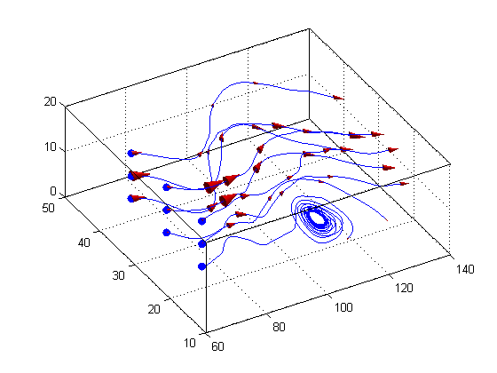

This is an example of how to visualize vector fields with streamlines in MATLAB®. Vector fields contain vector information for every point in space. For example, air flow data inside a wind tunnel is a vector field.
Read about the streamline and coneplot functions in the MATLAB® documentation.
Go to MATLAB Plot Gallery
% Load wind data load wind x y z u v w; figure; % Create streamline [sx, sy, sz] = meshgrid(min(x(:)), linspace(20, 40, 3), linspace(5, 15, 3)); hhh = streamline(x, y, z, u, v, w, sx, sy, sz); hold on; % Plot start point of the streamlines plot3(sx(:), sy(:), sz(:), 'bo', 'MarkerFaceColor', 'b'); grid on; box on; view(-30, 60); % Add velocity cones on top of the streamlines to indicate the velocity % along the lines. % Get X/Y/Z data for the stream lines xx = get(hhh, 'XData'); yy = get(hhh, 'YData'); zz = get(hhh, 'ZData'); % Place 5 velocity cones per stream line fcn = @(c) c(round(linspace(1, length(c), 5))); xx = cellfun(fcn, xx, 'uniformoutput', false); yy = cellfun(fcn, yy, 'uniformoutput', false); zz = cellfun(fcn, zz, 'uniformoutput', false); % Create coneplot hhh2 = coneplot(x, y, z, u, v, w, [xx{:}], [yy{:}], [zz{:}], 3); set(hhh2, 'FaceColor', 'r', 'EdgeColor', 'none'); camlight; lighting gouraud;